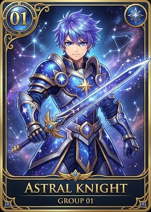
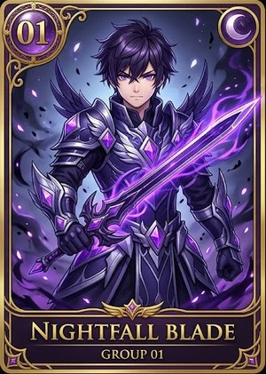
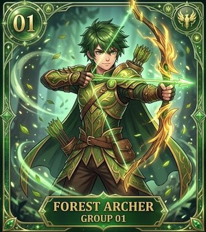
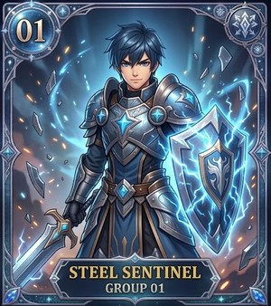
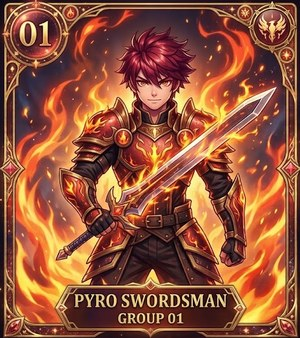
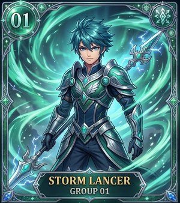

男戰士新圖：★ 基本 放這 6 張，可以嗎？
老師說：先經過老師同意，才能上架。綠框 🆕 ＝ 新圖。
| 現在 | 老師同意以後 |
|---|---|
| ★ 基本 ＝ 男 01～08（8 張舊圖） | ★ 基本 ＝ 男 31～36（6 張新圖） |
| 男 01～08 在商店 | 男 01～08 下架：商店看不到；已經選了的學生照舊用舊圖 |
| 新同學第一個免費戰士：從 8 張舊圖選 | 從 6 張新圖 選 |
★ 基本🪙 50（第一個免費）

Astral Knight

Nightfall Blade

Forest Archer

Steel Sentinel

Pyro Swordsman

Storm Lancer
🔒 下架（商店不賣；已經選的學生還可以繼續用）